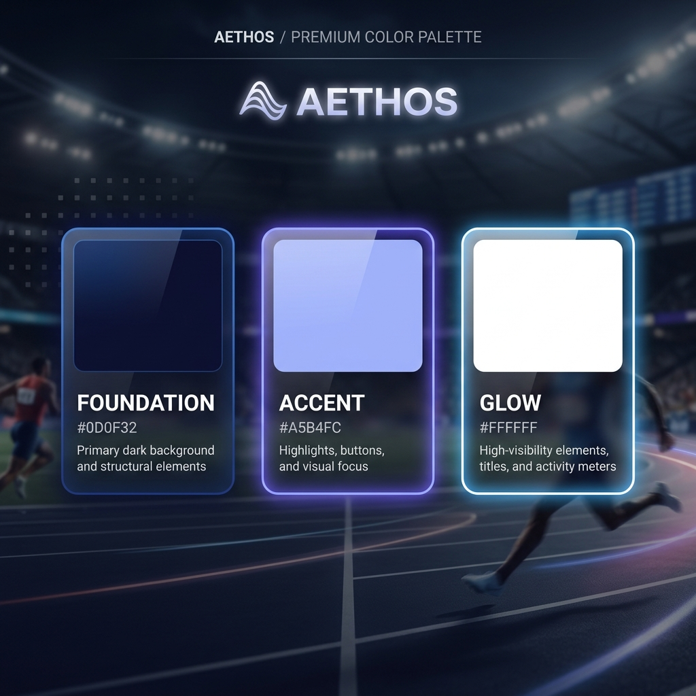
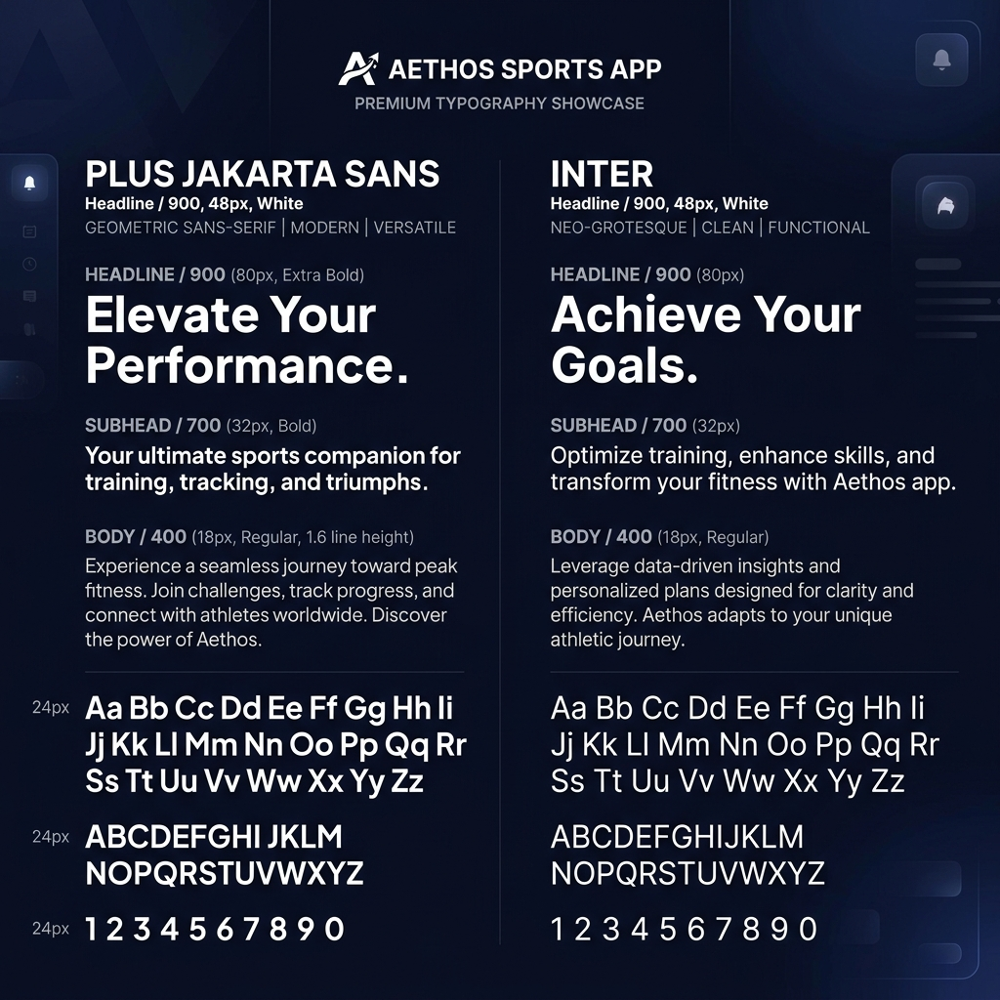

5. PROJETO DE SOFTWARE
Modelagem estrutural, conceitual e arquitetura técnica detalhada da plataforma esportiva Aethos.
A Solução Proposta
Diante dos desafios enfrentados por atletas para localizar espaços disponíveis para a prática de modalidades esportivas e professores para divulgarem seus trabalhos, a equipe desenvolveu o Aethos: uma plataforma web interativa com foco mobile-first e adaptável para desktop.
A arquitetura escolhida baseia-se no modelo cliente-servidor utilizando uma stack robusta e de alta compatibilidade:
- Apresentação HTML5 estruturado, Tailwind CSS para controle visual dinâmico e jQuery para manipulação assíncrona.
- Processamento Camada backend em PHP 8.x estruturada de forma modular para validar cadastros, CPF e sessões.
- Persistência Banco de dados relacional MySQL (PDO), com hashing Bcrypt para armazenamento seguro de credenciais.
5.1 Concepção do software (Arquitetura)
A estrutura técnica descreve o fluxo de comunicação entre os scripts clientes rodando no navegador, o motor de execução do servidor web e a comunicação direta via conexões TCP/IP PDO ao banco de dados.
Diagrama de Componentes
graph TD
subgraph Frontend_Client [Navegador do Usuário - Frontend]
direction TB
index_html["index.html (Visão do Mapa)"]
login_html["login.html (Acesso / Cadastro)"]
nova_senha_html["nova_senha.html (Reset Senha)"]
mapa_js["mapa.js (Leaflet & Nominatim)"]
auth_js["auth.js (Validações & AJAX)"]
style_css["style.css (Identidade Visual & Liquid Glass)"]
end
subgraph Backend_Server [Servidor de Aplicação - Backend PHP]
direction TB
conexao_php["conexao.php (PDO Connection)"]
login_php["login.php (Validação de Acesso)"]
register_php["register.php (Cadastro de Perfis)"]
trocar_senha_php["trocar_senha.php (Alteração Obrigatória)"]
end
subgraph Database_Server [Servidor de Banco de Dados]
database[("aethos_db (MySQL)")]
end
subgraph External_Services [APIs de Terceiros]
osm_api["API Nominatim & Tiles (OpenStreetMap)"]
geo_api["Serviço de Geolocalização do Navegador"]
end
%% Relações e Fluxos de Dados
auth_js -->|Requisições AJAX JSON| login_php
auth_js -->|Requisições AJAX JSON| register_php
nova_senha_html -->|Requisições AJAX JSON| trocar_senha_php
login_php --> conexao_php
register_php --> conexao_php
trocar_senha_php --> conexao_php
conexao_php -->|Queries SQL PDO| database
mapa_js -->|Solicitação Geográfica| geo_api
mapa_js -->|Busca por Nome / Autocomplete| osm_api
index_html --> mapa_js
login_html --> auth_js
Diagrama de Implantação (Estrutura de Servidores)
graph TD
subgraph Cliente [Computador / Smartphone Cliente]
Nav["Navegador Internet (Leaflet Engine)"]
end
subgraph ServidorWeb [Servidor de Aplicação Web]
Apache["Servidor Apache (PHP Engine)"]
Logs["Arquivos de Logs de Ações & Erros"]
end
subgraph ServidorDB [Servidor de Banco de Dados]
MySQL[("Banco de Dados MySQL (aethos_db)")]
end
subgraph ServidorOSM [Servidores OpenStreetMap]
Tiles["API Nominatim (Autocomplete & Map Tiles)"]
end
%% Comunicações
Nav -->|HTTPS / GET - POST| Apache
Nav -->|HTTPS / Fetch Requests| Tiles
Apache -->|PDO Connection - Porta 3306| MySQL
Apache -->|Escreve Logs| Logs
5.2 Requisitos funcionais e não-funcionais
Abaixo estão descritos de forma rigorosa as tabelas contendo os requisitos funcionais e não-funcionais que regem o comportamento e as restrições da plataforma Aethos.
Tabela 1 - Requisitos Funcionais
| ID | Nome | Descrição | Prioridade | Tipo |
|---|---|---|---|---|
| RF01 | Cadastro de Usuários (Atletas) | Permitir que o usuário comum se cadastre informando Foto de perfil, Nome completo, Apelido (opcional), DDD, Telefone de contato, E-mail e Senha. | Alta | Cadastro |
| RF02 | Cadastro de Professores | Permitir o cadastro de usuários-professores com campos adicionais obrigatórios: Endereço Fixo e CPF verídico. | Alta | Cadastro |
| RF03 | Validação de CPF | Validar o CPF do professor no ato do cadastro para certificar sua autenticidade física. | Alta | Regra de Negócio |
| RF04 | Autenticação por Perfil | Efetuar login diferenciando os níveis de acesso: Usuário Comum, Professor, Administrador e Desenvolvedor. | Alta | Segurança |
| RF05 | Login de Desenvolvedor por Nome | Permitir que desenvolvedores acessem o sistema digitando o nome (Lorrany, Arthur, Nepo, Leo, Joaquim) em vez de e-mail. | Alta | Segurança |
| RF06 | Troca Obrigatória de Senha | Exigir a substituição imediata da senha padrão de Administradores e Desenvolvedores no primeiro acesso ao sistema. | Alta | Segurança |
| RF07 | Ocultar/Exibir Senhas | Fornecer um botão visual (olho aberto/fechado) nos campos de senha em todas as telas de autenticação. | Média | Interface |
| RF08 | Solicitação de Localização | Emitir aviso/permissão ao usuário solicitando acesso à sua geolocalização antes de abrir o mapa. | Alta | Geolocalização |
| RF09 | Centralização Automática no Mapa | Centralizar a tela de navegação geográfica na localização GPS obtida do usuário após o aceite da permissão. | Alta | Interface |
| RF10 | Cadastro de Locais Esportivos | Permitir que o Usuário-Professor envie formulário de local, dojo, academia ou espaço de trabalho para alocação de ponto no mapa. | Alta | Cadastro |
| RF11 | Moderação de Locais | Exigir a aprovação do Administrador para alocar novos locais propostos por professores no mapa público. | Alta | Regra de Negócio |
| RF12 | Avaliação e Comentários | Permitir que atletas autenticados enviem avaliações (notas) e comentários sobre locais esportivos e professores. | Média | Interação |
Tabela 2 - Requisitos Não Funcionais
| ID | Nome | Descrição | Categoria | Norma/Legal |
|---|---|---|---|---|
| RNF01 | Compatibilidade Cross-Browser | O sistema deve operar nos navegadores Google Chrome, Safari, Firefox e Microsoft Edge. | Compatibilidade | ISO 25010 |
| RNF02 | Design Responsivo (Mobile-First) | A interface deve focar prioritariamente em celulares e ser perfeitamente adaptável para desktop. | Usabilidade | ISO 25010 |
| RNF03 | Proteção de Dados (LGPD) | Dados de CPF e contatos sensíveis devem estar em conformidade com as diretrizes da LGPD. | Segurança | LGPD |
| RNF04 | Criptografia de Credenciais | As senhas devem ser armazenadas de forma segura e criptografadas por meio do algoritmo Bcrypt no banco. | Segurança | ISO 27001 |
| RNF05 | Tempo de Resposta Geográfica | A listagem de pins próximos no mapa deve ser exibida em até 2 segundos após obter o GPS do cliente. | Desempenho | ISO 25010 |
5.3 Diagrama de caso de uso
Abaixo está o diagrama detalhando as interações de cada um dos atores no limite do sistema Aethos.
graph LR
subgraph Atores
Guest["Usuário Não Autenticado"]
Atleta["Atleta / Comum"]
Professor["Usuário Professor"]
Admin["Administrador"]
Dev["Desenvolvedor"]
end
subgraph Aethos_System [Sistema Aethos]
UC1("(Visualizar Mapa)")
UC2("(Buscar Pontos Próximos)")
UC3("(Fazer Login)")
UC4("(Cadastrar-se)")
UC5("(Avaliar Local)")
UC6("(Propor Ponto no Mapa)")
UC7("(Aprovar Locais)")
UC8("(Remover Comentários)")
UC9("(Visualizar Logs e Erros)")
UC10("(Troca Obrigatória de Senha)")
end
Guest --> UC1
Guest --> UC2
Guest --> UC3
Guest --> UC4
Atleta --> UC5
Professor --> UC6
Admin --> UC7
Admin --> UC8
Admin --> UC10
Dev --> UC9
Dev --> UC7
Dev --> UC8
5.4 Diagrama de classe
Modelagem orientada a objetos que representa a lógica estrutural das tabelas de banco e as visões de perfil de acesso.
classDiagram
class Usuario {
+int id
+string tipo_usuario
+string nome
+string email
+string senha
+string ddd
+string telefone
+boolean primeiro_acesso
+login() boolean
}
class Atleta {
+fazerAvaliacao()
}
class Professor {
+string cpf
+string endereco_fixo
+boolean aprovado_admin
+proporLocal()
}
class Administrador {
+aprovarLocal()
+removerAvaliacao()
}
class Desenvolvedor {
+visualizarLogs()
}
class LocalEsportivo {
+int id
+int professor_id
+string nome_local
+double latitude
+double longitude
+string endereco
+boolean status_aprovacao
}
class Avaliacao {
+int id
+int atleta_id
+int local_id
+int nota
+string comentario
}
Usuario <|-- Atleta
Usuario <|-- Professor
Usuario <|-- Administrador
Administrador <|-- Desenvolvedor
Professor "1" --> "0..*" LocalEsportivo
Atleta "1" --> "0..*" Avaliacao
LocalEsportivo "1" --> "0..*" Avaliacao
5.5 Diagrama entidade-relacionamento (DER)
Representação física das chaves primárias (PK) e chaves estrangeiras (FK) que constituem o banco de dados `aethos_db`.
erDiagram
USUARIOS {
int id PK
enum tipo_usuario
varchar nome
varchar email
varchar senha
varchar ddd
varchar telefone
varchar cpf
text endereco_fixo
boolean aprovado_admin
boolean primeiro_acesso
}
LOCAIS_ESPORTIVOS {
int id PK
int professor_id FK
varchar nome_local
double latitude
double longitude
varchar endereco
boolean aprovado
}
AVALIACOES {
int id PK
int atleta_id FK
int local_id FK
int nota
text comentario
}
USUARIOS ||--o{ LOCAIS_ESPORTIVOS : "cadastra"
USUARIOS ||--o{ AVALIACOES : "avalia"
LOCAIS_ESPORTIVOS ||--o{ AVALIACOES : "recebe"
5.6 Identidade visual do software
A identidade visual é baseada na refração digital com paleta de cores balanceada na regra 70-20-10 para maior conforto noturno.
Paleta de Cores do Sistema
Renderização visual das 3 cores fundamentais do sistema Aethos.
-
#0D0F32 (Foundation - 70%)
-
#A5B4FC (Accent - 20%)
-
#FFFFFF (Glow - 10%)


Tipografia e Estilos
Utiliza-se as fontes Plus Jakarta Sans para títulos de destaque e Inter para maior legibilidade em textos corridos e avaliações.